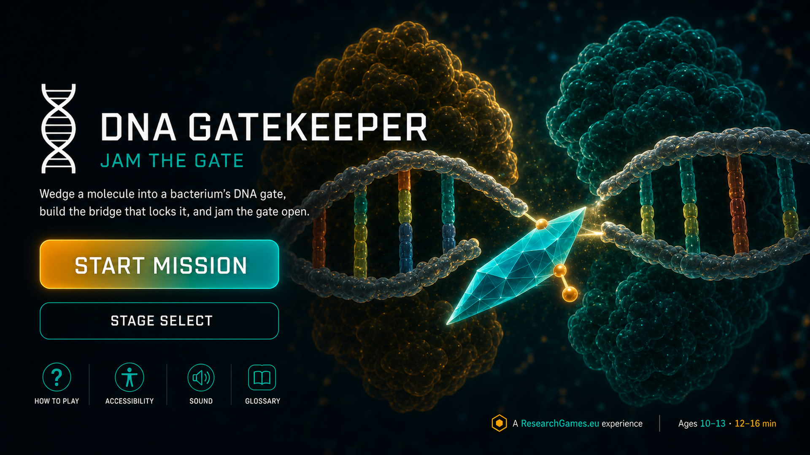
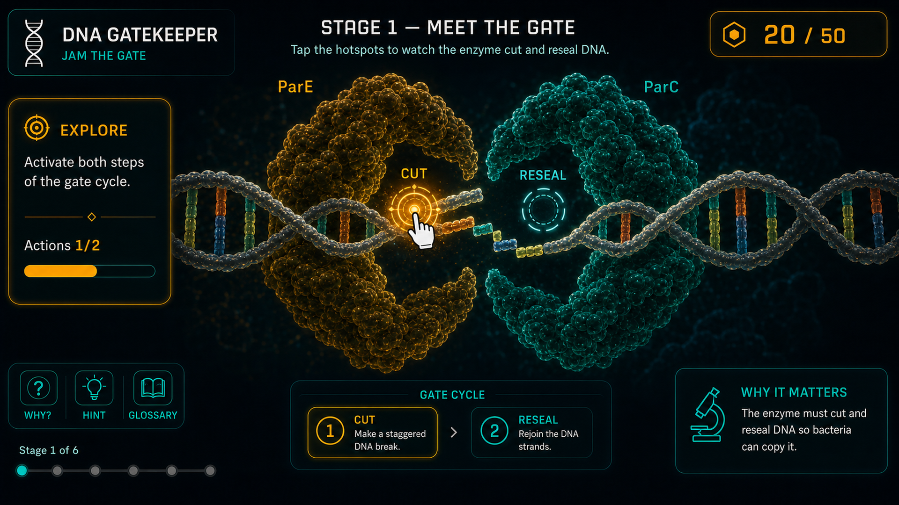
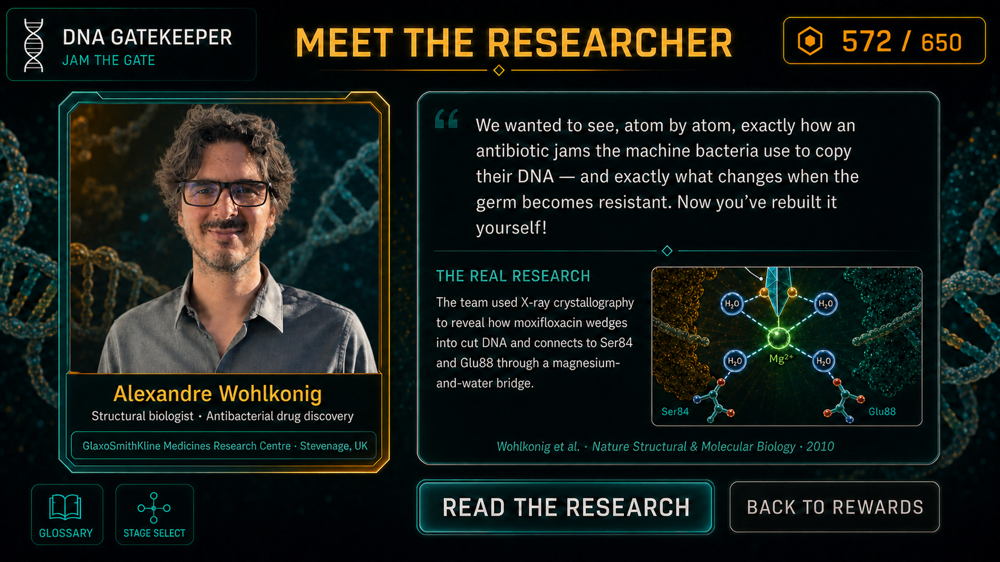

Playable research · Structural biology
DNA Gatekeeper
Jam the Gate
Wedge a molecule into a bacterium’s DNA gate, build the bridge that locks it, and discover how resistance breaks the trap.
The proposition
A published molecular mechanism becomes a mission players can understand by doing.
Players do more than click through facts. They inspect a DNA break, align and insert moxifloxacin, construct a magnesium-and-water bridge, then compare a resistant mutation with the working molecular trap.
The playable journey
Six connected decisions, not a slideshow.

Activate the enzyme cycle and see why an open, cut DNA gate is the crucial moment for intervention.

Research integrity
The research and scholar behind it stay visible.
Developed with structural biologist Dr. Alexandre Wohlkonig. The game connects every interaction back to the published evidence and introduces players to the people behind the discovery.
Structural biology becomes legible through spatial decisions: inspect, align, bridge and compare.
Research basis: Wohlkonig, A., Chan, P. F., Fosberry, A. P. et al. “Structural basis of quinolone inhibition of type IIA topoisomerases and target-mediated resistance.” Nature Structural & Molecular Biology 17, 1152–1153 (2010).